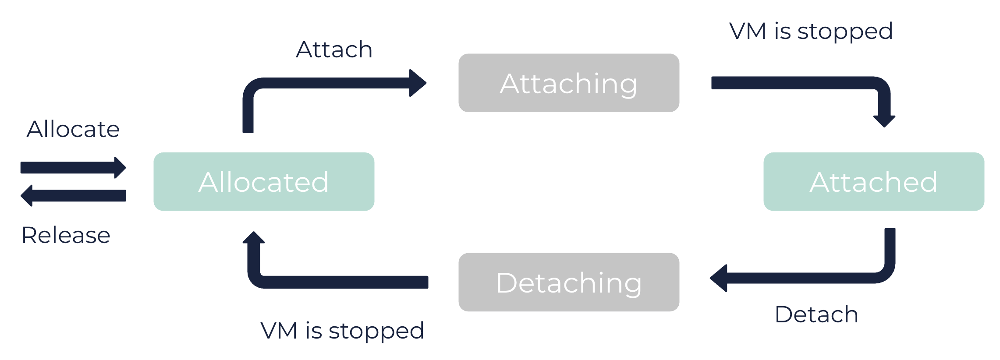

About Flexible GPUs
Flexible GPUs (fGPUs) are resources used for graphic rendering and large parallel computation in the Cloud. You can allocate fGPUs to your account and attach them to or detach them from your virtual machines (VMs).
General Information
An fGPU is a resource that can be allocated to your account, and attached to or detached from your VMs. You can attach 2 fGPUs to the same VM, provided that the fGPUs are the same models.
An fGPU can be in these different states:
-
allocated: The fGPU is reserved for your account. -
attaching: The fGPU is scheduled for attachment to the specified VM. You need to stop the VM for the fGPU to reach theattachedstate. -
attached: The fGPU is used by the VM. It is considered a device connected to the VM. -
detaching: The fGPU is scheduled for detachment from its VM. You need to stop the VM for the fGPU to reach theallocatedstate.

|
When you attach an fGPU, the VM must meet the following conditions (see the table of models of fGPUs below):
In addition, the VM must not be a dedicated VM. |
Models of fGPUs
3DS OUTSCALE provides different models of fGPUs, with different amounts of video RAM (VRAM):
| Model of fGPU | VRAM of the fGPU (in MiB) | Maximum Number of vCores | Maximum Amount of Memory (in GiB) | Compatible Processor Generations | Regions |
|---|---|---|---|---|---|
nvidia-a100 |
40000 |
35 |
250 |
v5, v6 |
|
nvidia-a100-80 |
80000 |
35 |
256 |
v6 |
|
80000 |
35 |
256 |
v6, v7 |
|
|
nvidia-k2 |
4096 |
80 |
512 |
v3, v4 |
|
nvidia-l40 |
48000 |
35 |
250 |
v7 |
|
nvidia-m60 |
16000 |
80 |
512 |
v3, v4 |
|
nvidia-p6 |
16000 |
80 |
512 |
v5 |
|
nvidia-p100 |
16000 |
80 |
512 |
v5 |
|
nvidia-v100 |
16000 |
35 |
250 |
v5 |
|
|
To make sure you have the most up-to-date values, use the |
VM Type Conversion
As with all VMs, you can modify the type of a VM that has fGPUs attached to it. However, the number of attached fGPUs might be incompatible with the new VM type (number of vCores, amount of memory, and processor generation). Different behaviors occur depending on the conversion:
| Old Type | New Type | Conversion Behavior |
|---|---|---|
AWS |
AWS |
All fGPUs attached to the VM are deleted. Then as many as possible are created and attached to the converted VM. |
AWS |
TINA |
All fGPUs attached to the VM are deleted. |
TINA |
AWS |
All fGPUs attached to the VM are detached. Then as many as possible are created and attached to the converted VM. |
TINA |
TINA |
If all fGPUs attached to the VM are compatible with the new VM type, the VM is converted. If not, a |
For more information on modifying VM types, see Modifying a VM Attribute.
Related Pages
Corresponding API Methods
AWS™ and Amazon Web Services™ are trademarks of Amazon Technologies, Inc or its affiliates in the United States and/or other countries.